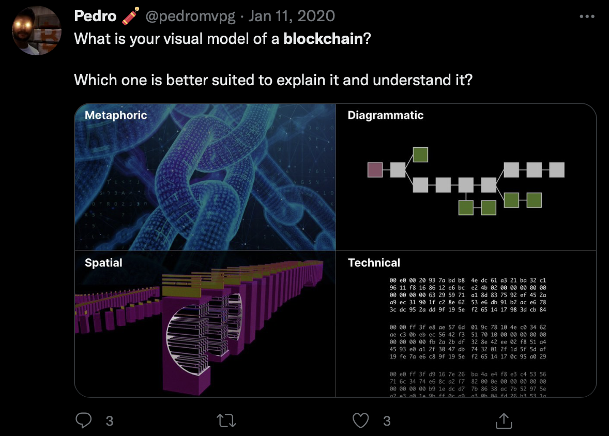
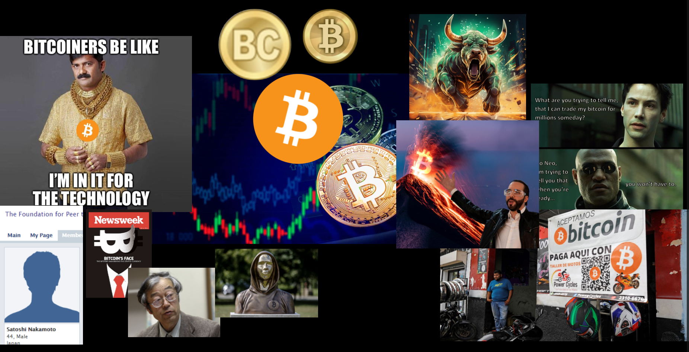
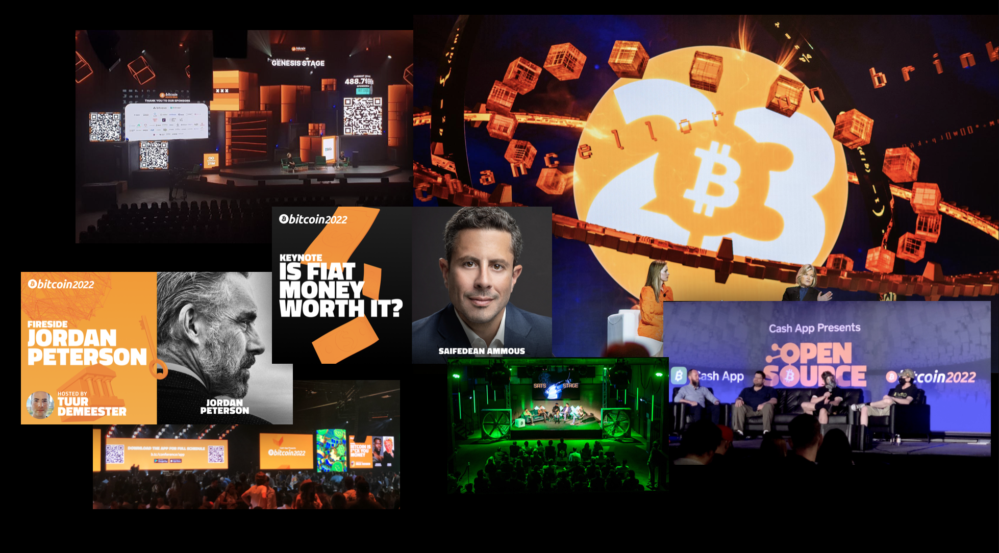

Transcription by bitlyrics.co
Watch on youtube
I'm here to talk about what I think Bitcoin looks like. We all know that Bitcoin can mean different things for different people and look different ways to different people.
A lot of people see memes, a lot of people see logos, a lot of people see personalities but I was trying to find a way to visualize it in a more anatomic way and break down all the elements and bring them into the 3D space.
Kind of do away with all the metaphoric illustrations that we tend to see in the mainstream media, the too complex technical explanations, and the too reductive diagrammatic to really go into the spatial understanding of Bitcoin.
I've been working on a lot of different Bitcoin projects—UI, design, some development—trying to develop games and trying to elevate the basic building blocks of Bitcoin, like the source code, into something that people can use and explore not just through other people's content but by themselves.
After doing all these projects, why not also try to do a motion picture? The idea is to build an open-source film that people can watch with their families. It's something that can circulate the world but will explain Bitcoin in a very direct and precise manner.
Here's a test of when we started working on this. We see the different layers of the network. We have the nodes all connected to their peers.
We can zoom into the node, see what's happening inside the node, the different components that enable the node to process the information that comes from the network—like the validation, the mempool, the connection with other nodes. We can look inside and see how the messages are transported from node to node and then ultimately added to the blockchain that enables us to have the ledger of all the transactions.
The idea is to set it to some beautiful soundtrack that other bitcoiners are already working on that we can really entertain but also surprise and delight the viewer of any walks of life. It can be old people, young people. Hopefully, this film can touch everybody equally. Here we go to the chip of the chain, and we see what's inside the block. We see all the transactions, the Merkle route. This is 2020, a very fast test.
We're trying to create images that can represent Bitcoin but in a very precise way. How do we do that? We go through the whole protocol and try to break it down into different chunks and explore one at a time. We can let that be the driver of the film's narrative. Obviously, each component has other components that we need to explore. Ultimately, it would be ideally a 2-hour film, but this can be released in a series of films or it can be released as a longer or shorter film.
Right now, the model is everything is funded by you, the bitcoiners. We have a lot of organic donations that came through our websites. We also use Geyser. People have donated 21 sats to millions of sats. We also have contributions from other bitcoiners and other non-bitcoiners that contribute to code that's essential to build the movie. Then we have collaborations with other bitcoiners that are more interested in the editing and the music composition that just take whatever this project creates and they're free to engage with the images however they want. It's all under MIT license.
Obviously, counting on the support of the other initiatives that help happen in Bitcoin. Also like to take the support of Bitcoin Magazine that's been very helpful in broadcasting and distributing whatever is already done from the film. We would like to credit as a simple producer for a film and we're especially thankful to Bitcoin Magazine because we've also been able to inject elements of the film in a lot of the conferences that they've been throwing.
The idea is to take data from Bitcoin and put it into three dimensions. We connect to our nodes, we parse the information from the blockchain, we then put it in the Blender software, which is a 3D open source software that runs Python scripts. Then, with the data that we collect from the chain, we can then build geometry. [image]In this case, you're seeing how the blocks are distributed in the beginning of the chain, and the separation between each block is based on the time it took for them to be found by the miners.
This causes an interesting problem because we're trying to represent time but we're not so interested in the human time but more in the Bitcoin time. We have 10 minutes, we have two weeks for the 2016 blocks for the difficulty adjustment, we create a spiral. Then we stack that spiral into a helix, and that's how we represent Bitcoin or the blockchain, at least.
[image]Here we see the Genesis block with nine days of no mining that happened between the Genesis block and the other blocks that you see in the bottom.
In a more recent moment, blockchain has blocks that exceed the 1 Megabyte limit, which is this gray cube [image], and those are most likely SegWit blocks. We can see that if we take one of these helix, we can see a very standard distribution of the blocks because obviously, it averages on 10 minutes, but there's no block that actually is mined in precise 10 minutes.
We can take all the other difficulty adjustments throughout the history of Bitcoin, and we can see that in the beginning, the blocks were empty. [image] So we see more dim, very unstable moments in the mining because sometimes, you see moments where there's no blocks, probably computers left the network, and sometimes, you see high concentration of blocks, that's probably better hardware or more computers joining the network.
[visual] This is a close-up of those spirals just to see how the blocks are distributed and the distanced from each other, but also how they're packed with data as we move closer to our present time.
This is an animation of all the stack [visual]. In the beginning, big fluctuation, but these discs are trying to aim at that two-week target, and we can see them getting fuller and fuller as time goes by. This is the chain tip at the time this was made, which was 2022.
For those following the more recent events on the chain, this is when ordinals started [image]. We see the dimension of the blocks increasing dramatically.
We can also map the mempool by taking data or just visually matching it to the charts that already exist from other projects. And we place the mempool by the tip of the chain because those are the transactions most likely to be added to the tip of the chain.
This, I hope, will help people understand that there are moments where it's very hard to get into the chain with your transaction, but there's moments where the mempool is empty, and it's very cheap to be added to a block.
We can also look at the UTXOs and along with the mempool, which is one of the most volatile elements of Bitcoin because it's always changing—people add transactions and replace transactions. But also, the UTXO set updates with every single block that's added because transactions are always consuming output from the past.
If we have, imagine a sat being the smallest unit in Bitcoin all the way to 100 million sats, we got a rough representation of Bitcoin. Here we have 50 Bitcoin, the original block reward. [image] This is what it looks like with this model inside of Bitcoin. It's just an explosion of particles of sats. We can map those into a block. So, every single block has a set amount of Bitcoin that can be spent in the coinbase, but also people have moved bitcoin to transactions that are sitting in those blocks unspent. For each block, we can create a sphere that represents the amount of Bitcoin that exists there. Once we input real data, we see the confusion that exists on chain.
Here's another test. We have the layer of blocks that never changes once it's set; it's set. But then there's a layer of UTXOs associated with each block that will always be changing. [video] You can see that there are blocks that have no bitcoin and blocks that have a lot of bitcoin.
We can also look at the data in a more raw way. Here we have the binary version of the data, the hex version of the data, a tagged version that calls out all the important script op_codes of Bitcoin and tags them. Then we have a more parsed-out version of the blockchain that just calls out everything that's in the data. We can also look at the data that sits on everybody's blocks and have a hex dump of the first block that file where basically your node stores all the data. And that line up top that represents roughly the size of the Genesis block, so it's one line of roughly 200 kilobytes. Here we see around a thousand blocks. The disturbance that you see here, is actually when on block 170 when Hal Finney got the first block, the first transaction. There's a special block that has one extra transaction than all the preceding ones, and that's why it creates this break in the pattern.
More recent blocks with the same view. We can look at how miners like to organize their transactions in their blocks one way. Here is like a slice of a more recent dat file. Here we see maybe five blocks, and you see the different patterns that the way miners organize their transactions create. Another visualization where it's a little bit more broken down, the bit-by-bit visualization of a private key. These are 256 bits; this is an actual private key. So, you can visualize what a private key looks like in three-dimensional space, not just with words but with bits. Obviously, these are also all laid out with code. We input a binary, and then geometry comes out. Hopefully, this is the goal for me, but hopefully for other people too, it will create a sensibility towards how much space data occupies and how much effort there is to validate and parse that data.
Here's a more recent animation of the Genesis block. We go bit by bit. First, we have eight bits mostly zeros and one. That one is signaling the version of the block, and afterward comes the previous block hash, which in this case is a set of zeros because the Genesis block doesn't have a preceding block. We build up all the zeros, and then at the distance, we can start seeing the rest of the elements of the block header, which includes the Merkle root hash, the nonce that was used to mine that block, and the number of transactions existing in this block, which in this case is just the one Coinbase transaction. So we break a line and we keep building. Now we're building the Coinbase transaction for the first block, which also consumes an empty output that doesn't exist. Then we go on to signal that we're going to sign that transaction. It's obviously in the signature of the Coinbase that Satoshi embedded the message that we all know.
At the same time that we're building with just the bits, we're also putting the layer of the hex and the ASCII in Latin-1. So we have the three different ways of visualizing the data.
From here, you get an idea of what can be accomplished. We can talk about sizes of blocks, how many transactions fit in a block, how the transactions connect to each other, what is the history of each transaction, to also create some awareness of where your UTXOs come from, so you're not to doxx yourself or hurt yourself.
We can also look at the amount of satoshis being moved in each transaction. We can also talk about the cryptography that Bitcoin uses. In this case, we're mapping the elliptic curve that Bitcoin uses under real numbers next to all the adjacent curves. Then we can also plot it in three-dimensional space because it uses modular arithmetic. Instead of going to infinite, it actually rotates on both axes. The mathematical space that we're dealing with is actually this Taurus-like figure. And then that line goes pretty much all the way, and points on that line just the prime point is where your bitcoin is hidden; the secret is somewhere in that line.
You can also look at the network. We can map the network by asking our node how many nodes it sees. We can also go to other services like Bitnodes; they have been collecting more reliable data on visible nodes in the network. We can also derive their location in the world by their IP address. Obviously, not all of them have IP addresses because we're also dealing with the Tor Network. [video]Here we see a visualisation of the Tor Network maybe 10,000 blocks ago. That are the blocks that are more from the geography and the confines of the physical space are the Tor nodes that are untraceable, at least to a certain extent. The ones that are close to the geography are the nodes that we know where they are.
We represent a node as a sphere that has connections. Information moves through those connections; once it hits the node, the data explodes. It gets processed by the node as if it was inputs in a factory; they need to be processed before they are added to the chain. [video] Here's the a node handshake; it sends a message out, it gets a message in, and then it starts exchanging information with the other nodes.
We can also look at Lightning. So, in this case, this is a rough representation of a Lightning node that has transactions that open the channels connected to the chain. Imagine that we have a payment coming through our node, and it immediately rebalances the channels according to the amount of sats that move through the node.
We also look at the multiple versions of the code. Right now, more interested just in the Alpha version of January 3rd. We can also look very extensively at whoever got any code merged on the main repository of Bitcoin Core. Something that's really interesting is to demystify the complexity of the code and actually explore and explain code line by line because even though it's C++ the functions, the classes, there's a lot of English language here that can be understood by most people.
We can also look at mining. The idea of a miner is that it has an array of chips that produce hashes. Until it finds a valid hash, those hashes are wasted and kind of flow into the air. This would be kind of a mapping of the mining pools on top of the network.
I'm going to skip towards the end and invite you to collaborate in any way you want by either donating your time, your money, helping produce, write, edit code, distribute, or anything else that needs to be done to bring a film to the masses if the masses are interested. It's an open source for and by bitcoiners, hopefully.